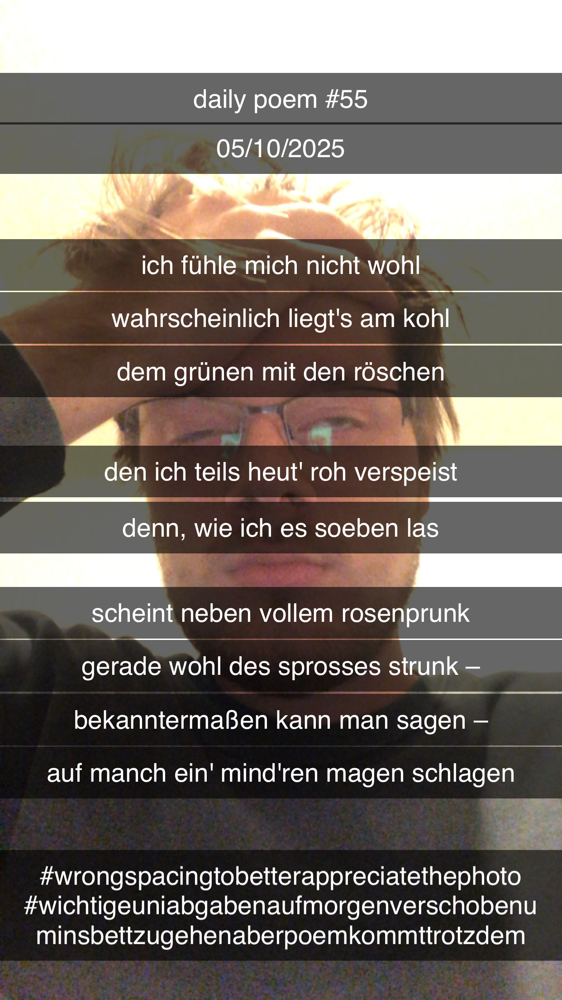

Wehleidige Unwohlbekundung aufgrund von schlecht verdautem Kohl
[55]Ich fühle mich nicht wohl –
Wahrscheinlich liegt's am Kohl;
Dem grünen, mit den Röschen,
Den ich teils heut' roh verspeist –
Denn wie ich es soeben las,
Scheint neben vollem Rosenprunk
Gerade wohl des Sprosses Strunk –
bekanntermaßen, kann man sagen –
Auf manch ein' mind'ren Magen schlagen.
